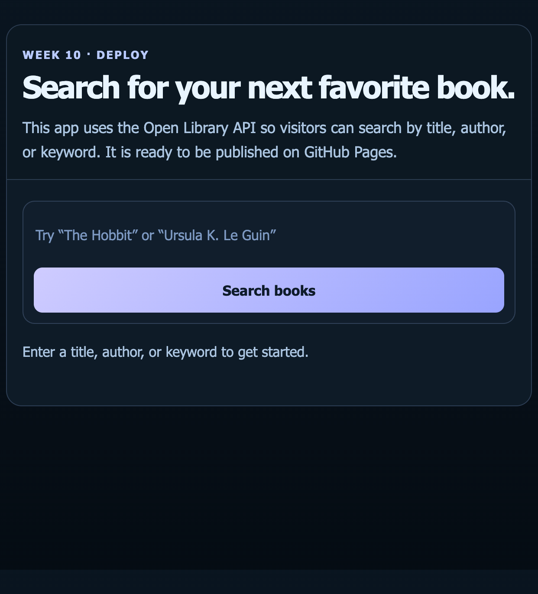
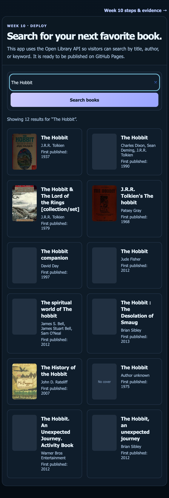
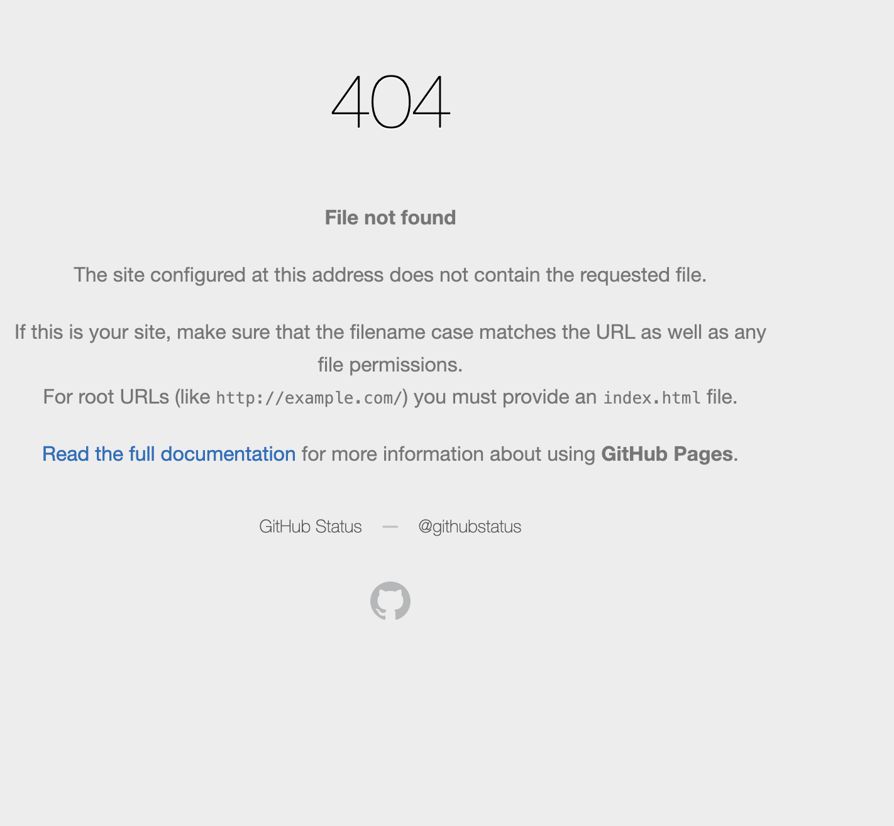
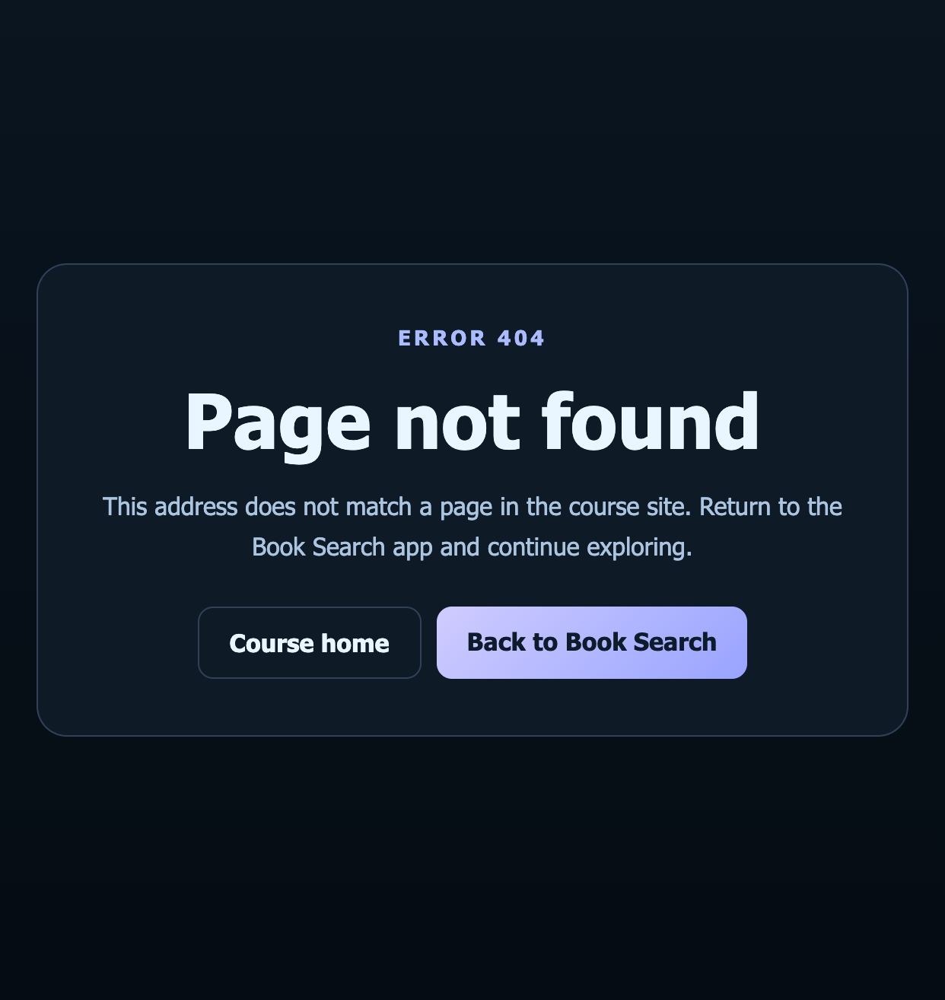

1
Build the search app
Kept the app as a real user-facing search page. The form accepts a book query, while the result cards show title, author, publication year, and cover fallback.

Week 10 · Deploy & verify
This is the work evidence for the Week 10 deployment task. Each screenshot shows a real app or GitHub Pages state—not a mockup.
Open Library · Static site
Search by title, author, or keyword. The app fetches live catalog data, shows covers when available, and provides a fallback when a cover is missing.
Kept the app as a real user-facing search page. The form accepts a book query, while the result cards show title, author, publication year, and cover fallback.

Searched for The Hobbit. The app received 12 results from the
API and rendered the result cards in the browser.

Confirmed this is a static site with no build step, the app uses the HTTPS Open Library API, and local page links stay within the project. The search works against the live API before deployment.
Opened a URL that does not exist on the deployed course site. GitHub Pages
returned its default 404 page; this confirmed that a 404 file inside the
week10/ folder is not used as the site-wide error page.

Added a site-root 404.html with a clear message and a working
link back to the course home and Book Search app. After publishing, tested
a missing route and verified GitHub Pages served this custom page with a
404 response.

The Book Search app is already published at
roziboyahmadaliyev1310-sy.github.io/web-programming/week10/
and was checked for an HTTP 200 response.
webpro-book-search. That repository does not exist yet, and
GitHub is signed out in the available browser and no authenticated GitHub
CLI is installed. The app files are ready; sign in to GitHub in the browser
to create and publish that separate repository.